Bem-vindos!
Programa
AI for Business
Wifi
Inteli - Visitantes
Quem conduz
Rodrigo Nicola
Professor · Inteli
- Engenheiro mecatrônico (Mauá), mestre pelo ITA
- Veículos autônomos e aprendizado de máquina
- No Inteli desde 2022
Rodrigo Mangoni Nicola
Agenda

Rosenblatt (1958), Fig. 1: Organization of a perceptron
Entradasretina
Pesosconexões
Somaassociação
Limiar
Saídaresposta
errou? ajusta os pesos
Um perceptronpadrões simples
Muitos perceptronspadrões complexos
Em 1969, ninguém
sabia treinar isso
Minsky & Papert, Perceptrons, 1969
·
·
·
·
O
gato
subiu
no
?
telhado
próxima palavra
Contexto
O…
O gato…
O gato subiu…
O gato subiu no…
rei
rainha
homem
mulher
príncipe
princesa
menino
menina
masculino → feminino
comum → realeza
rei − homem + mulher
≈ rainha
viu no treinoo rei andava no palácio
nunca viua rainha andava no palácio
embeddings
Bengio et al., 2003
Mikolov et al., 2013
Sentei
no
banco
da
praça
Abri
uma
conta
no
banco
= assento
= instituição financeira
atenção
tokens
O gato subiu no telhado
Ogatosubiunotelhado
9 tokens
Thecatclimbedontotheroof
6 tokens
O que é frequente vira um pedaço só
Quantos r tem strawberry?
strawberry
zero-shot
few-shot
prompt
PDFs e políticas
planilhas
e-mails
transcrições de reunião
site da empresa
base de conhecimento
janela de contexto
fora da janela, o modelo não vê
2.048tokens no GPT-3 (2020)
milhõesde tokens nos maiores de hoje
janela de contexto
precedência
System promptde quem fez o app
descrições das skills
Instruções personalizadasescritas uma vez
Históricoanexo
Mensagem atual“faça a ata da reunião”
Turno do modeloskill: ataferramentasresposta
Janela cheia: as mensagens mais antigas saem primeiro, com o anexo
skills
Relatório mensal
Ata de reunião
Proposta comercial
Quanto custa, em reais, um jantar em Lisboa hoje?
buscar("preço médio jantar Lisboa")
observacerca de €25 por pessoa
pensaAgora, a cotação do euro hoje.
agebuscar("cotação euro hoje")
observa€ 1 = R$ 6,10
pensaFalta converter.
agecalcular(25 × 6,10)
observa152,50
Cerca de R$ 150 por pessoa.
o que você vê
o que está por trás
Harness
1instruções do projeto
2memória
3histórico da conversa
4anexos
5busca na web
6skills e ferramentas
Modelo
Agenda
Produtos de limpeza, higiene e descartáveis para empresas
R$ 80 mide faturamento por ano
120pessoas
1.400clientes
Campinas (SP) · desde 2004 · empresa fictícia
maior cliente
Sabor & Cia35 restaurantes, 12% do faturamento15 na Grande SP, com transportadoraCaso 1
“Posso dar 5% de desconto?”
“Qual o prazo máximo?”
“Pedido de R$ 2.000 em SP paga frete?”
Respondo isso todo dia.
caso 1 · o que você tem
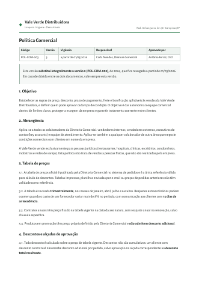
Política comercial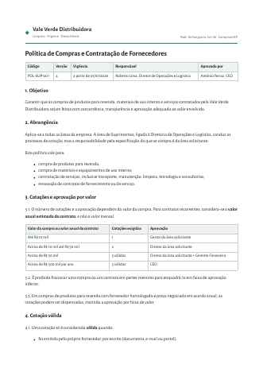
Política de compras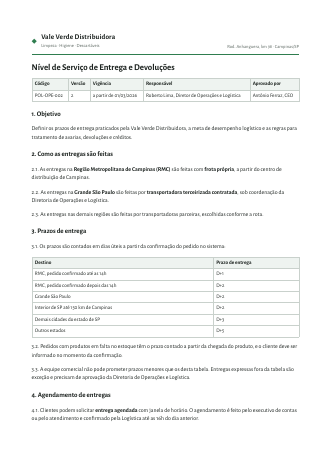
Entregas e devoluções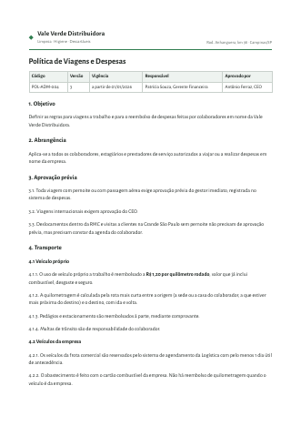
Viagens e despesas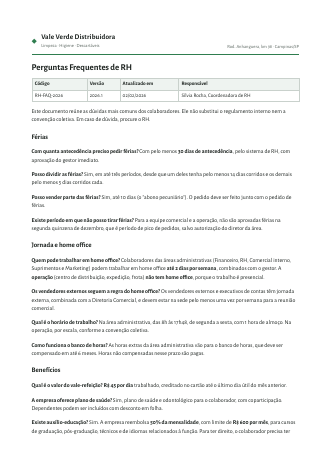
Dúvidas de RHa tarefa
Um assistente que responde às dúvidas do time, citando a política certa.
Agenda
Agenda
Caso 2
Contraproposta: trocar a transportadora por uma que resolva o que eles reclamaram.
caso 2 · o que você tem
a reunião
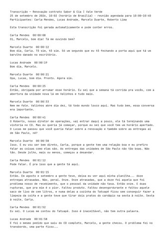
Transcrição da reunião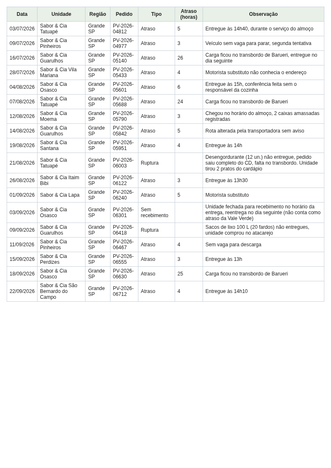
Ocorrências de entregaas propostas
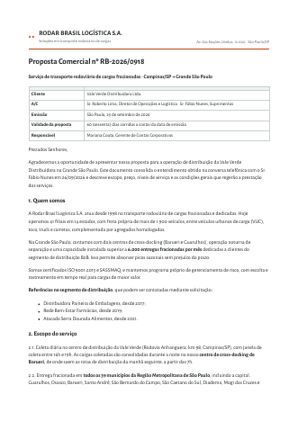
Rodar Brasil (PDF)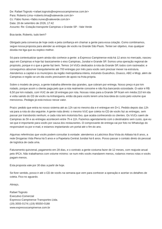
Expresso Campinense (e-mail)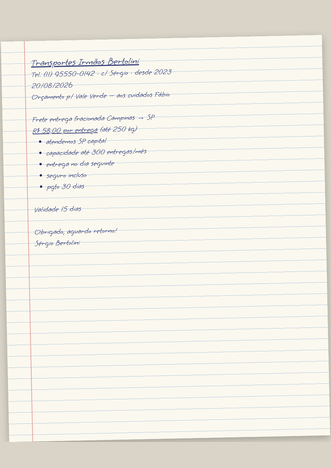
Irmãos Bertolini (foto)a pesquisa do agente
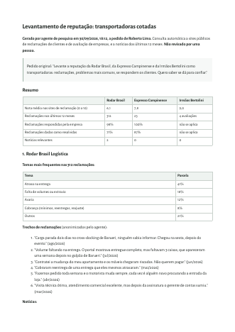
Relatório de deep researchas regras da empresa
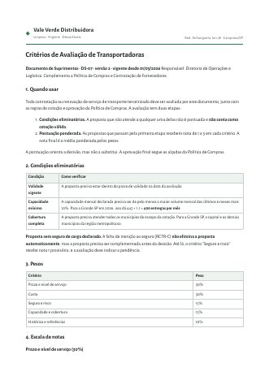
Critérios de avaliação Política de compras
Política de compras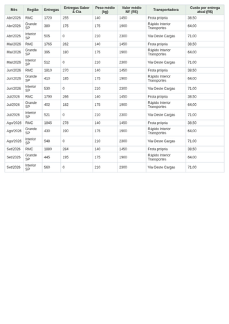
Volumes de entregaa tarefa
Uma nova transportadora que resolva o que o cliente reclamou, para a contraproposta.
 arquivos do caso
arquivos do casofluxo 1 · da transcrição a fatos e acionáveis
Receber a transcrição
Separar fatos de opiniões
Extrair os acionáveis
Marcar o que é interno
Validar e distribuir
Para cada passo
- Que contexto precisa?
- Precisa de ferramentas?
- Qual o risco?
E, no fim: como automatizar?
passo 1
Receber a transcrição
passo 2
Separar fatos de opiniões
passo 3
Extrair os acionáveis
passo 4
Marcar o que é interno
passo 5
Validar e distribuir
e então
Como automatizar?
fica com a pessoa
um Gemsugestão
um agente com ferramentas
um sistema autônomo
A instrução é fixa e a transcrição entra a cada reunião. Uma pessoa valida antes de distribuir.
fluxo 2 · da proposta ao match e ao risco
Ler a proposta, em qualquer formato
Comparar com os requisitos
Pesquisar a reputação
Avaliar o risco operacional
Recomendar com cenários
Para cada passo
- Que contexto precisa?
- Precisa de ferramentas?
- Qual o risco?
E, no fim: como automatizar?
passo 1
Ler a proposta, em qualquer formato
passo 2
Comparar com os requisitos
passo 3
Pesquisar a reputação
passo 4
Avaliar o risco operacional
passo 5
Recomendar com cenários
e então
Como automatizar?
fica com a pessoa
um Gem
um agente com ferramentassugestão
um sistema autônomo
Pesquisa e conta pedem ferramentas. A escolha do fornecedor fica com a pessoa.
Agenda
Agenda
Agenda
Agenda
revisão cruzada
A IA está onde ajuda, e a pessoa onde precisa decidir?
Dá para entender os passos, o contexto e as ferramentas?
O que vai ser medido mostra se deu certo?
10:00
Agenda